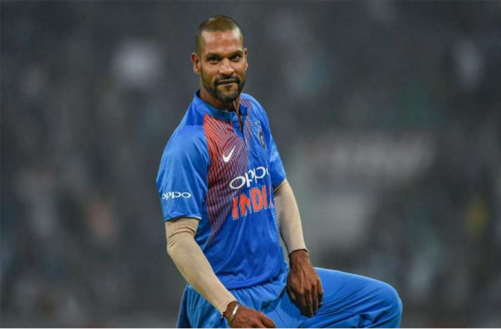

SHIKHAR DHAWAN
Shikhar Dhawan (born 5 December 1985) is
an Indian international cricketer.
A left-handed opening batsman and an
occasional right-arm off break bowler,
he plays for Delhi in first-class cricket and
Delhi Capitals in the IPL.
He played for the Indian Under-17 and
Under-19 teams before making his
first-class debut for Delhi in November 2004.
At the 2015 World Cup, Dhawan was
the leading run-scorer for India
and in the following year, became the
fastest Indian to reach 3,000 ODI runs.
In December 2017, he became the 2nd
fastest Indian to reach 4000 ODI runs.
Dhawan also holds the record for most
runs in a calendar year in Twenty20
International cricket (689). He is known
for his successful and crucial knocks in
ICC Tournaments.
Dhawan made his One Day International
(ODI) debut against Australia in October 2010 at
Visakhapatnam. His Test debut came against
the same opposition in March 2013 at Mohali
where he scored the fastest century by any
batsman on Test debut and ended his innings
with 187 runs from 174 balls. A prolific
run-scorer in ICC tournaments, Dhawan
top-scored in the 2004 Under-19 World Cup,
and the 2013 and 2017 Champions
Trophy tournaments, and holds the record
for the fastest to reach 1000 runs in ICC
ODI tournaments.